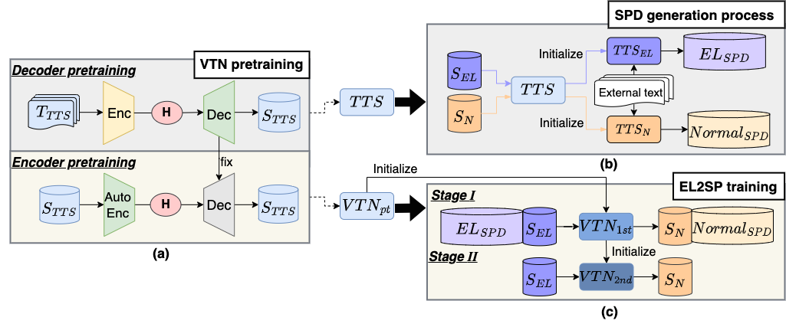
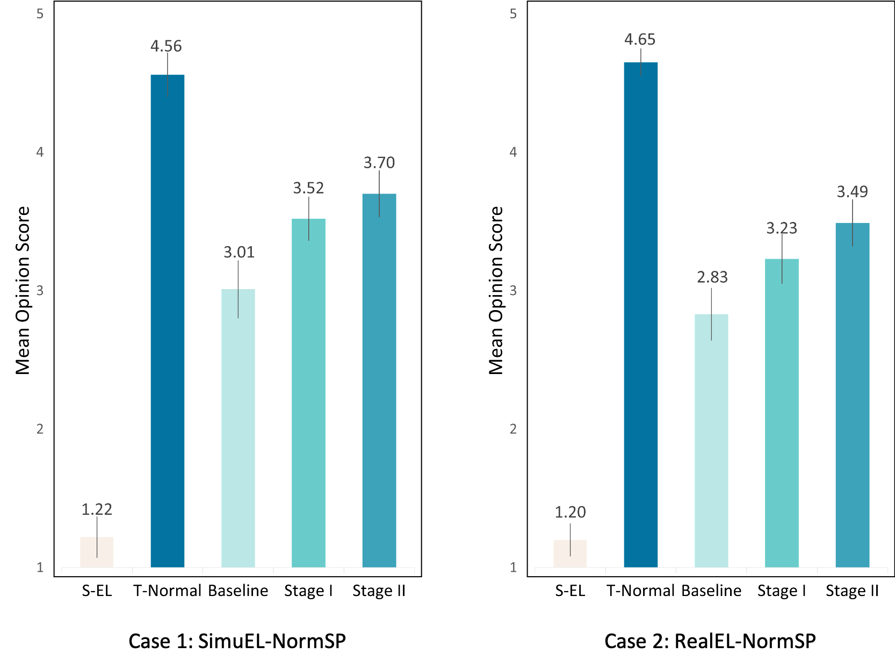

Two-stage training method for Japanese electrolaryngeal speech enhancement based on sequence-to-sequence voice conversion
Status: Submitted to SLT 2022.
Abstract:Sequence-to-sequence (seq2seq) voice conversion (VC) models have impressive performance in terms of naturalness and intelligibility, when it comes to, for example, converting prosody, handling the suparasegmental F0 contours and determining different phoneme duration. Consequently, they could have potentials in converting electrolaryngeal speech to normal speech (EL2SP). However, seq2seq VC models suffer a significant performance degradation when the training data is insufficient. To address this issue, we suggest a novel, two-stage strategy to optimize the performance on seq2seq-based EL2SP VC within a small size of original dataset. We first combine a large amount of imperfect synthetic parallel data, which is generated from the corresponding EL and normal text-to-speech models, with original dataset into VC training. Then, an adaptation training stage is conducted with original dataset only. The results show that the method progressively improves the seq2seq EL2SP VC performance.
Proposed method

Dataset
Two Datasets are recorded: RealEL, which is EL corpus recorded from a laryngectomee; SimuEL and NormSP, which are simulated EL corpus and normal corpus recorded from a healthy speaker.
Two EL2SP-experimental cases
Case 1: SimuEL to NormSP.
Case 2: RealEL to NormSP.
Subjective results

Speech Samples of Case 1
Transcription: 二百円の牛乳を何本か買ったから、六百円か、八百円だったわ。 (nihyakuen no gyuunyuu wo nanbon ka katta kara、roppyakuen ka、happyakuen dattawa。)